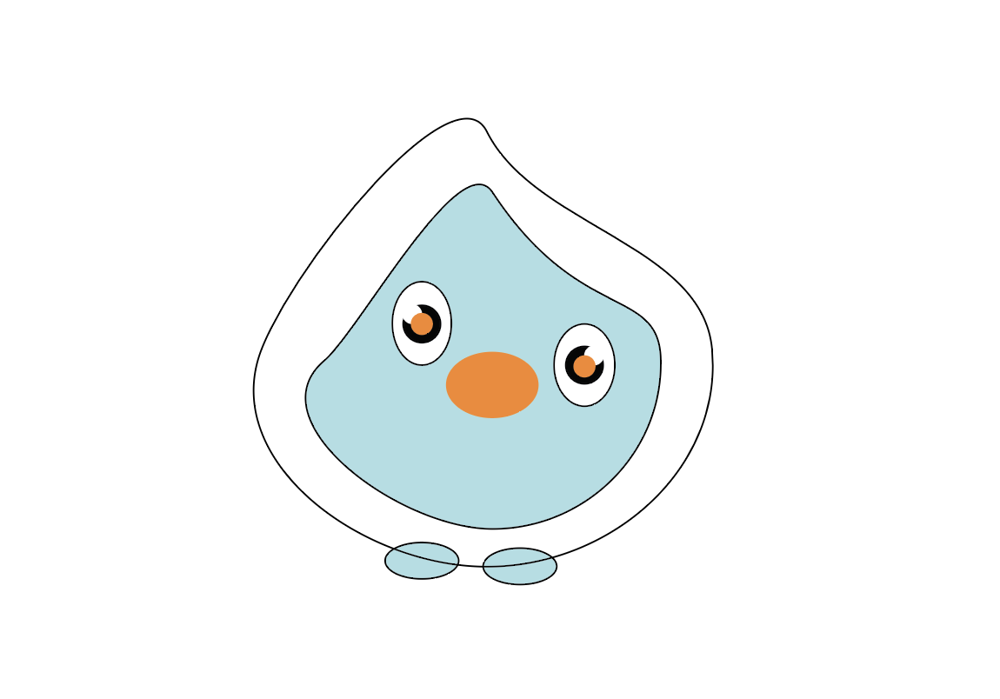

This is Teddy penguin, he is teal with an orange nose. He has a unique shape to him, similar to a tear drop. They are able to express there emotions by changing color. At times his eyes may shift, the left one stays up and the right one droops down.
